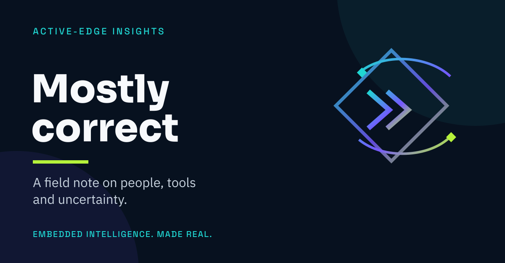

Insights · 4th September 2026
Mostly correct
What happened when a sceptical engineer found a machine that could finally follow the shape of his thinking.

For months, one of my oldest engineering friends wanted very little to do with AI.
He had good reasons. He has spent years building a complicated piece of software around an idea that is very clear in his own head and quite difficult to explain to anybody else. The work is technical, visual and deeply personal. A system that confidently produces something almost right is not necessarily helpful. Sometimes almost right is worse than obviously wrong.
So we argued about it.
Not seriously. This was the sort of argument that happens among friends who have spent too long making things together. I would show him what I had managed to build. He would point out where the tools were unreliable, expensive or just irritating. I would tell him that the process mattered more than the first answer. He would continue doing things his own way.
Then, recently, he agreed to try.
We started simply. He described what he wanted to achieve. I helped with the mechanics around the AI tools and kept an eye on what they were doing. The aim was not to ask a machine to replace his judgement. It was to give him another way to explore a problem he already understood better than anybody else.
Within a week, something shifted
He was telling another friend that the technical world had changed. He felt he had made the sort of progress that might previously have taken him years. The comment that stayed with me was not about speed, code or cost. It was this:
“This is the first time I have found somebody who understands what I am trying to do.”
Of course the “somebody” was not a person. It was a statistical system producing fallible answers from patterns in data. But the experience of being understood was real enough to unlock the work.
That distinction matters.
Our little group has spent a lot of time talking about these tools. We have enthusiasts, sceptics and people who move between the two positions several times in an afternoon. Somebody tries a new model. Somebody else hits a limit, finds a cheaper route or explains why the apparently cheaper route is not cheaper at all. Links arrive. Experiments begin. Half the ideas disappear and a few turn into something tangible.
The discipline of “mostly correct”
One friend put the difficulty particularly well: experienced programmers can find it hard to accept “mostly correct”. We have built careers around precision. A program does not care that you were close. Hardware is even less forgiving. Connect the wrong thing and the smoke offers a fairly decisive review of your work.
AI asks for a different discipline. You have to accept that the first answer may be wrong without becoming casual about correctness. You have to create feedback, tests and boundaries. You need the machine to show its work, and you need a way to catch it when it has misunderstood you.
The skill is not believing the answer. It is building a process in which useful work can survive an unreliable answer.
That has been my own journey too.
I began as a sceptic. Then I became slightly outraged when I realised the tools could sometimes write better code than me. Eventually I understood that this was the wrong contest. My job was not to defend every task I had learned over thirty years. My job was to learn how to drive a new kind of tool while keeping responsibility for where we ended up.
The more interesting change is between people
We are beginning to share methods rather than merely products. We compare how we preserve context, divide work, test results and stop agents wandering beyond their authority. We talk about local systems, shared computing and how younger people might gain access to capabilities that would otherwise sit behind expensive accounts and institutional walls. The conversations are still chaotic, but a serious proposition is emerging underneath them: perhaps this technology is most useful when people learn together.
There is anxiety in that conversation as well. Nobody knows what happens to work, education or the wider economy if these systems continue improving at this pace. The confident predictions all feel slightly absurd. We can see that something substantial is happening without pretending we know where it leads.
That uncertainty makes the small human moments more important.
In the middle of one breathless exchange about models, tools and the future of software, the conversation wandered into television recommendations. I became completely confused because one person appeared to be referring to herself in the third person. After several increasingly baffled questions, I discovered that she and her partner share the same first name.
Everyone else apparently knew this.
I had spent months thinking I understood the group while missing one of its most basic facts.
There is probably a lesson there for all of us building with AI. We can assemble elaborate systems, give agents access to tools, and discuss intelligence at heroic length. Then a completely ordinary misunderstanding reminds us that context is fragile and assumptions are everywhere.
The machine may be mostly correct. So may we.
The useful bit is what happens next: we ask another question, laugh at ourselves, correct the model of the world in our heads, and carry on making something together.
What this means for product teams
At Active-Edge, this is not an abstract debate. We use agents in real embedded product work, where software has to meet hardware, evidence matters and “mostly correct” is never the final acceptance test.
If your team is exploring how AI can accelerate a connected product without surrendering engineering judgement, we should talk.